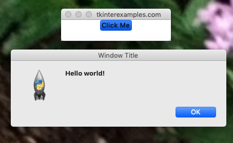
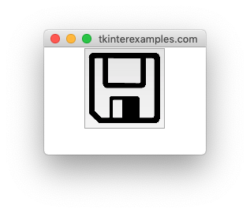

Button
The Button element is used to create clickable, event-performing buttons inside an
application.
Simple Button #
A simple Button is rather easy to set up using only a couple of attributes.
import tkinter
from tkinter import messagebox
def show_alert():
messagebox.showinfo("Window Title", "Hello world!")
root = tkinter.Tk()
tkinter.Button(root, text="Click Me", command=show_alert).pack()
root.mainloop()

Button with Image #
We can also draw our button with an image instead of text. This can be helpful to create toolbars with icons for commonly understood operations such as save, print, etc.
from PIL import Image, ImageTk
import tkinter
from tkinter import messagebox
root = tkinter.Tk()
image_tk = ImageTk.PhotoImage(Image.open("/path/to/image.png"))
tkinter.Button(root, image=image_tk).pack()
root.mainloop()

Disabled Button #
We may want a Button to render even if it isn't currently hooked up to a command.
In this case we can specify that the button is disabled and this will make it non-clickable.
import tkinter root = tkinter.Tk() button = tkinter.Button(root, text="Click Me", state=tkinter.DISABLED) button.pack() root.mainloop()

If we would like to this button to become useable we need to set a couple attributes:
# Give the button a command to execute
button["command"] = lambda: print("HELLO WORLD!")
# Set the button state back to normal
button["state"] = tkinter.NORMAL